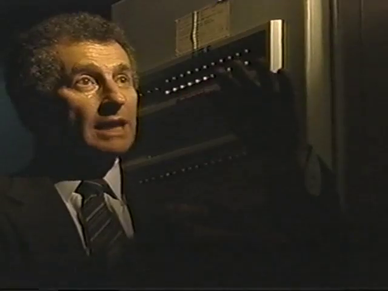
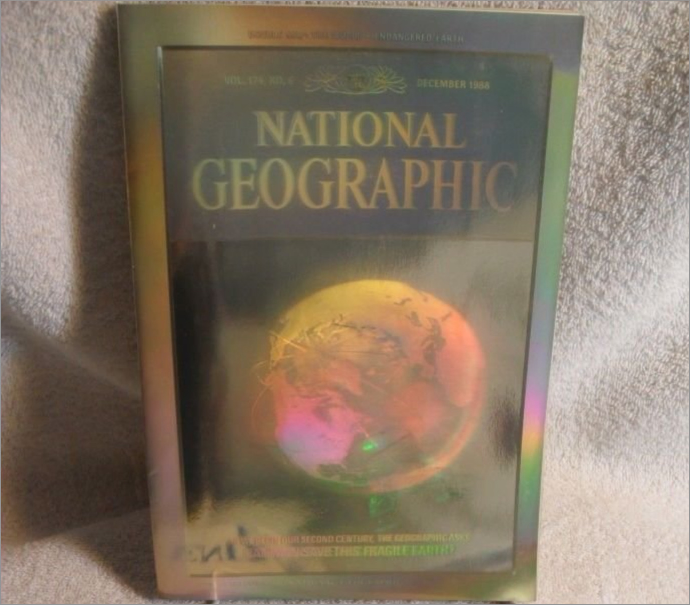

Dr Daniel Nemenyi
Cybernetic Guerilla Warfare

Leonard Kleinrock
JCR Licklider
Buckminster Fuller with geodesic 'Bucky Ball'
Videofreex
Lanesville TV
Videofreex
Jordan Belsen,
World
(1970)
Jack Dorsey, founding CEO of Twitter
